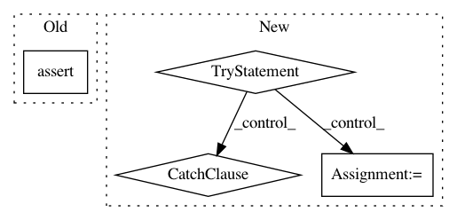

ffa271e34384438030753e46e20322ea8dc489a4,niftynet/engine/application_driver.py,ApplicationDriver,_randomly_init_or_restore_variables,#ApplicationDriver#Any#,202
Before Change
// check model"s file
checkpoint = "{}-{}".format(self.session_dir, self.initial_iter)
assert tf.train.get_checkpoint_state(self.model_dir) is not None, \
"Model file not found {}*, please check" \
"config parameter: model_dir and *_iter".format(checkpoint)
// restore session
tf.logging.info("Accessing {} ...".format(checkpoint))
self.saver.restore(sess, checkpoint)
After Change
checkpoint = ckpt_state.model_checkpoint_path
assert checkpoint, "checkpoint path not found " \
"in {}/checkpoints".format(self.model_dir)
try:
self.initial_iter = int(checkpoint.rsplit("-")[-1])
tf.logging.info("set initial_iter to {} based "
"on checkpoints".format(self.initial_iter))
except ValueError:
tf.logging.fatal("failed to get interation number"
"from checkpoint path")
raise ValueError
else:
checkpoint = "{}-{}".format(self.session_dir, self.initial_iter)
// restore session
tf.logging.info("Accessing {} ...".format(checkpoint))
In pattern: SUPERPATTERN
Frequency: 3
Non-data size: 4
Instances
Project Name: NifTK/NiftyNet
Commit Name: ffa271e34384438030753e46e20322ea8dc489a4
Time: 2017-08-23
Author: wenqi.li@ucl.ac.uk
File Name: niftynet/engine/application_driver.py
Class Name: ApplicationDriver
Method Name: _randomly_init_or_restore_variables
Project Name: ray-project/ray
Commit Name: 85197deece837a1f4ffdbbffb72af6028a9b6e32
Time: 2020-11-11
Author: ameerh@berkeley.edu
File Name: python/ray/autoscaler/_private/resource_demand_scheduler.py
Class Name: ResourceDemandScheduler
Method Name: _infer_legacy_node_resources_if_needed
Project Name: tensorlayer/tensorlayer
Commit Name: 3d305831a0edd1288cc2f94f81debbdc359d7bb3
Time: 2019-03-22
Author: jingqing.zhang15@imperial.ac.uk
File Name: tensorlayer/layers/lambda_layers.py
Class Name: Lambda
Method Name: __init__